Malaysia Trav-E-Log ©
Finish Iron Rod Art
 |
| Too Hot "The famous Weld Quay was the birthplace of Kelinga Mee, a spicy Indian noodle dish created to whet the appetites of sailors and port workers. WELD QUAY, CORE ZONE, GEORGE TOWN WORLD HERITAGE SITE©" (index 11) |
| back: More Iron Rod Art |
Dec 25, 2015, George Town, Penang Island, Malaysia
-------------------------------------------
Never did find one of the Iron Rod Art dispays, but found a new slaughterhouse right where the map directed me. Just before leaving George Town, noticed a gentleman chiselling part of a damaged display. Asking what he was doing, he explained "restoring" some artwork. Certainly hope these repairs continue, as searching for the art appears to be a major activity of visitors to George Town.
-------------------------------------------
| Same Taste, Same Look "Not only the 'pau' taste same, you also look same! Here you'll find traditional Cantonese Restaurants serving Dim Sum. CINTRA STREET, BUFFER ZONE, GEORGE TOWN WORLD HERITAGE SITE.©" (index 49) | 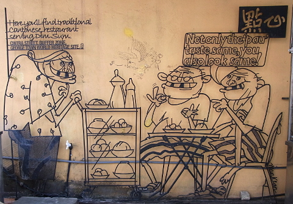 |
Kopi 'O' "One Tall, Double Shot, Decaf Espresso"
"KOPI-O-KAU!."
"KIMBERLY STREET, BUFFER ZONE, GEORGE TOWN WORLD HERITAGE SITE.©" (index 14) |
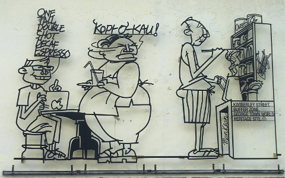 |
Three Generations "Kimberly Street is famous for its hawker food. Some stalls have been here for 3 generations. KIMBERLY STREET, BUFFER ZONE, GEORGE TOWN WORLD HERITAGE SITE.©" (index 16) |
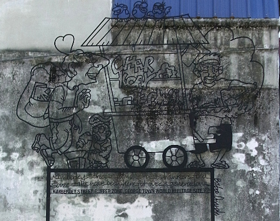 |
| Spy "In the early 20th century, the slightly risque reputation of this area was further enhanced by the presence of Japanese camera shops which were suspected of covert spying activities. CINTRA STREET, BUFFER ZONE, GEORGE TOWN WORLD HERITAGE SITE©" (index 38) |
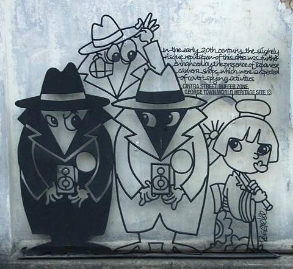 |
| Too Salty "The Tamils refer to this street as Uppukaran Teru or Salt Traders' Street, a reference to the salt trading activities. GREEN HALL, CORE ZONE, GEORGE TOWN WORLD HERITAGE SITE©" (index 27) |
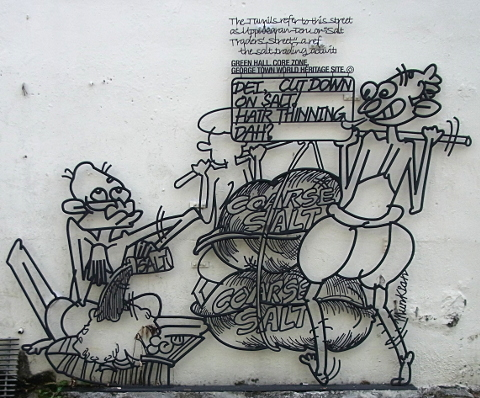 |
| Win Win Situation "Muntri Street was named after the Orang Kaya Menteri of Larut, Perak, Ngah Ibrahim. MUNTRI STREET, BUFFER ZONE, GEORGE TOWN WORLD HERITAGE SITE©" (index 2) | 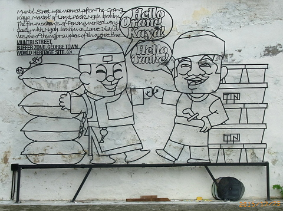 |
| Retail Paradise "Campbell Street is Penang's Fifth Avenue, a retail paradise where shoppers can stroll along the row of shophouses and feast their eyes on an array of goods. CAMPBELL STREET, BUFFER ZONE, GEORGE TOWN WORLD HERITAGE SITE©" (index 39) |  |
| Duck "Also known as "Chicken Alley", this lane was once used by poulterers. CHE EM LANE, CORE ZONE, GEORGE TOWN WORLD HERITAGE SITE©" (index 44) | 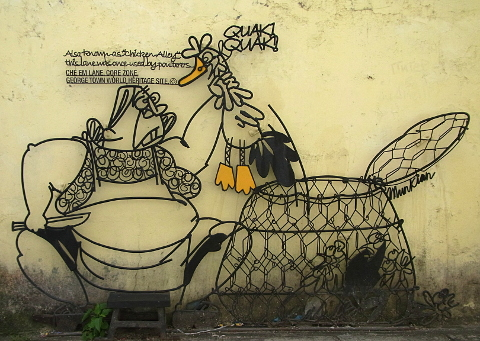 |
| Gedung Rumput "While its royal English name sounds very grand, it's also locally known as Gedung Rumput or Grass Godown, with bullock carts being parked along this wide street. QUEEN STREET, CORE ZONE, GEORGE TOWN WORLD HERITAGE SITE©" (index 37) | 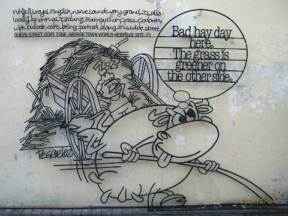 |
| 'Yeoh Ony' "Yeoh Kongsi was established in 1836 to look after the welfare of the newly arrived Yeoh clansmen. CHULIA STREET GHAUT, CORE ZONE, GEORGE TOWN WORLD HERITAGE SITE©" (index 47) |
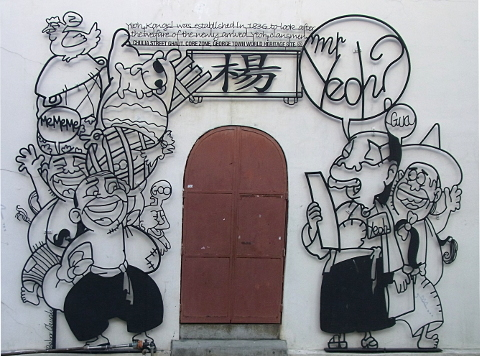 |
_____________________________________________________________ |
| High Counter "The counter of the pawnshop is typically higher for security. CARNARVON STREET, CORE ZONE, GEORGE TOWN WORLD HERITAGE SITE©" (index 41) |
| 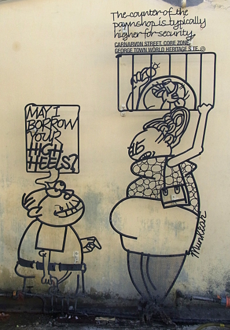 | 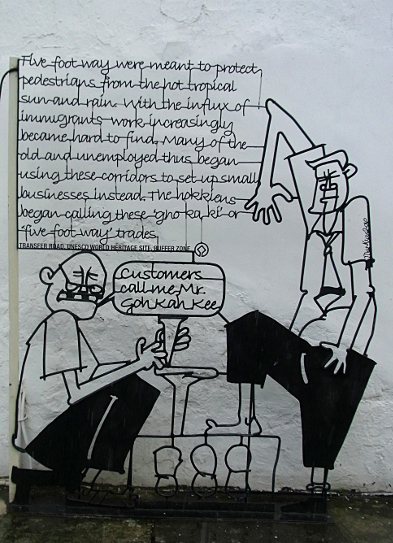 |
| Mr Five Foot Way "Five foot way were meant to protect pedestrians from the hot tropical sun and rain. With the influx of immigrants work increasingly became hard to find. Many of the old and unemployed thus began using these corridors to set up small businesses instead. The Hokkiens began calling these 'goh ka ki' or 'five foot way' trades. TRANSFER ROAD, UNESCO WORLD HERITAGE SITE, BUFFER ZONE.©" (index 3) |
_____________________________________________________________ |
| One Leg Kicks All "The "black and white" Amahs were Cantonese domestic servants from Guangdong who did all kinds of household chores and would refer to themselves with wry humour as "Yat Keok Tet" (One Leg Kicks All). MUNTRI STREET, BUFFER ZONE, GEORGE TOWN WORLD HERITAGE SITE©" (index 4) |
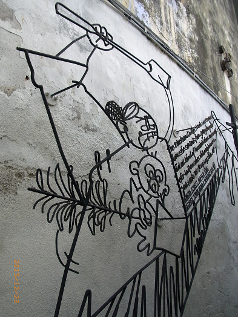
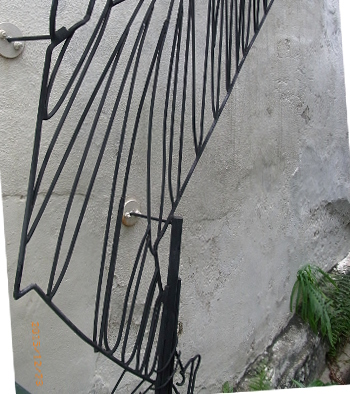 | (The composite photo to the left was behind an eight-foot high construction barricade, photo below, making picture taking most difficult.) 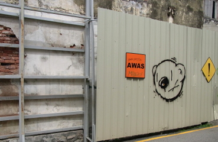
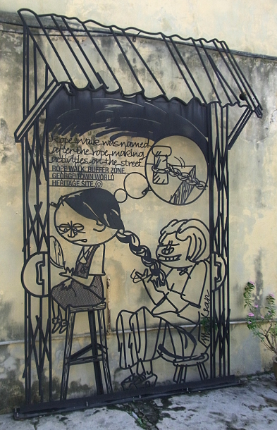 |
| Rope Style "Rope walk was named after the rope making activities on the street. ROPE WALK, BUFFER ZONE, GEORGE TOWN WORLD HERITAGE SITE©" (index 17) |
_____________________________________________________________ |
| Double Role "Up untill 1909, the police doubled as George Town's fire fighters. CHULIA STREET GHAUT, CORE ZONE, GEORGE TOWN WORLD HERITAGE SITE©" (index 46) |
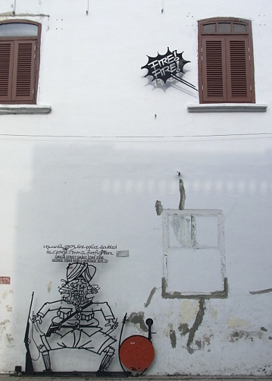 | 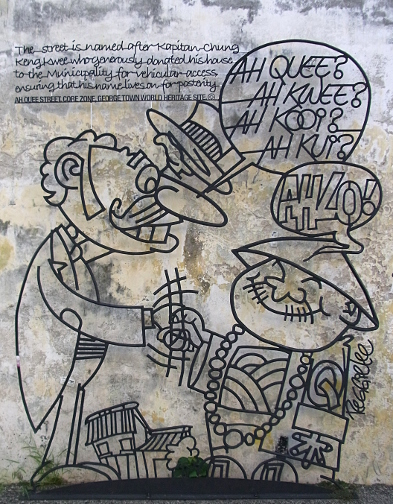 |
| Ah Quee? "The street is named after Kapitan Chung Keng Kwee who generously donated his house to the Municipality for vehicular access, ensuring that his name lives on for posterity. AH QUEE STREET, CORE ZONE, GEORGE TOWN WORLD HERITAGE SITE©" (index 43) |
_____________________________________________________________ |
| No More Red Tape "Transfer Road is named after the event of the transfer of Straits Settlement from Indian office to Colonial office in Singapore in 1867. It resulted in a more efficient administration and an era of great prosperity of the Crown colonies. TRANSFER ROAD, BUFFER ZONE, GEORGE TOWN WORLD HERITAGE SITE©" (index 34) |
| 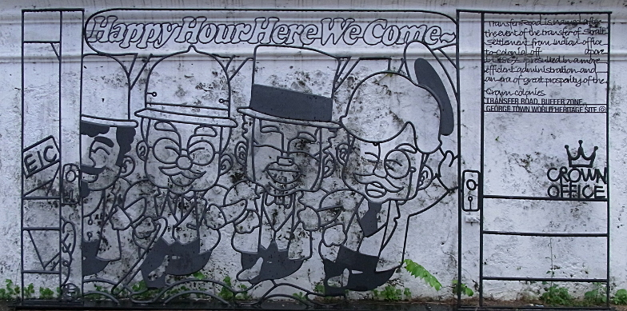 |
Have a nice day!